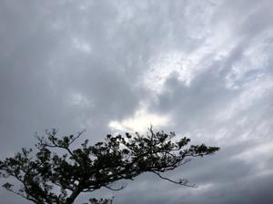
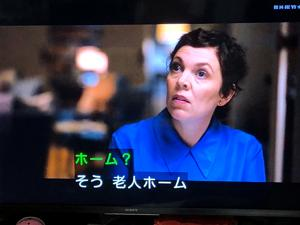
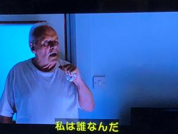
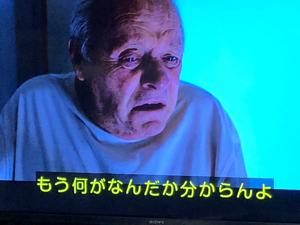

うるがいの話 ある日
最新: 生活のリズムが変わる【うるがいの話 ある日】とは 一日だけのプログです
『うるがいの話』の最新一日だけのプログで、通信料が少なく経済的だ。カニの画像をクリックすると全ての日付が載る『うるがいの話』サイトを表示します
|
|
【うるがいの話】 うるがい(ｳﾙｶﾞｲ urugai)とは、『もずくがに』の名前でとても大きくなります。 |
|---|---|
|
|
【カミマヤーの話】 猫のことを方言でマヤーといいます。カミマヤー（kamimayaa）とは、神の猫のことです。 |
|
【たながぁの音楽】 たながぁ（ﾀﾅｶﾞｰ tanagaa）とは手長えびのことで、何種類かあり大きいのは車 エビぐらいになります。 |

|
【ぶながぁの話】 ぶながぁ(ﾌﾞﾅｶﾞｰ bunagaa)とは、赤い髪の毛、赤い身体、そして身長は１ｍ２０ｃｍ ぐらい、川の蟹を食べているの目撃された。場所は沖縄県国頭郡大宜味村のと ある村僕の隣近所に住んでいる爺さんから、聞いた話です。 |
|
|
【ギーマの話】 ギーマ(giima)とは、山原の里山に咲くスズランに似た、 花を付けます。実は食べられます、 気が付くと口の周りが紫になっています。 |
2023年03月14日 (火）生活のリズムが変わる
15:42
   
覚悟していた老人ホームから、お義母さんの嘆願電話は今のところ来ない。ヨ
メは楽しくやっているのではと言っている。一日２～３回のマンションとの往
復が無くなり、生活リズムが変わった。昨日、たまたまは録画で映画をみた。
ファーザー THE FATHER 2020 製作
名優アンソニー・ホプキンスが認知症に苦しむ年老いた父親を演じアカデミー
賞主演男優賞に輝いた感動のヒューマン・ドラマ。同賞では脚色賞と合わせ２
冠に輝いた。認知症が進行していく父親と、その介護で疲弊していく娘の姿を
認知症の側の視点から描き、観る者に記憶力の低下によって直面する父親の不
安と恐怖を体感させる画期的な表現スタイルも話題に。
お義母さんの認知症の進行は、かなり加速している。私の叔母さんのように半
年後には、ヨメを認知出来なくなるかもしれない。お義母さんの口癖は、『な
にが何だか訳が分からない』である。
１５時３６分 ビットコインの総資産 ￥９、４５６（↑７００）株と半比例